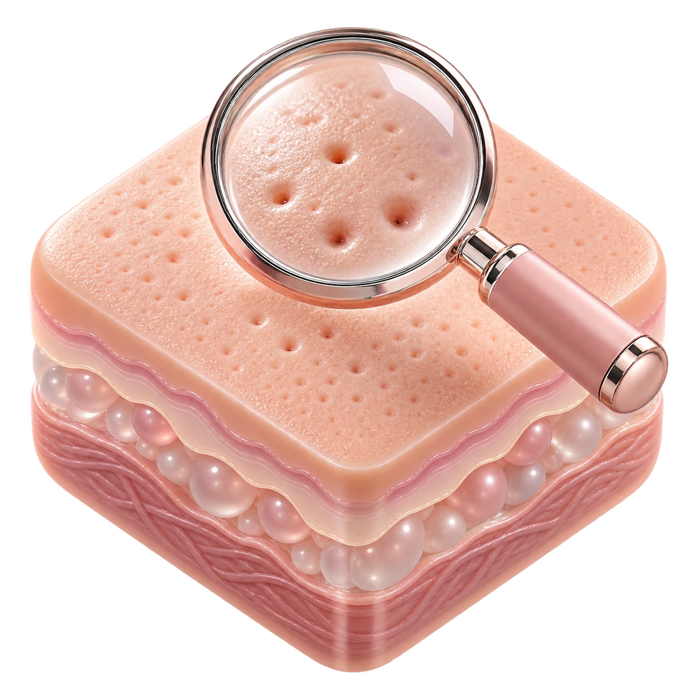
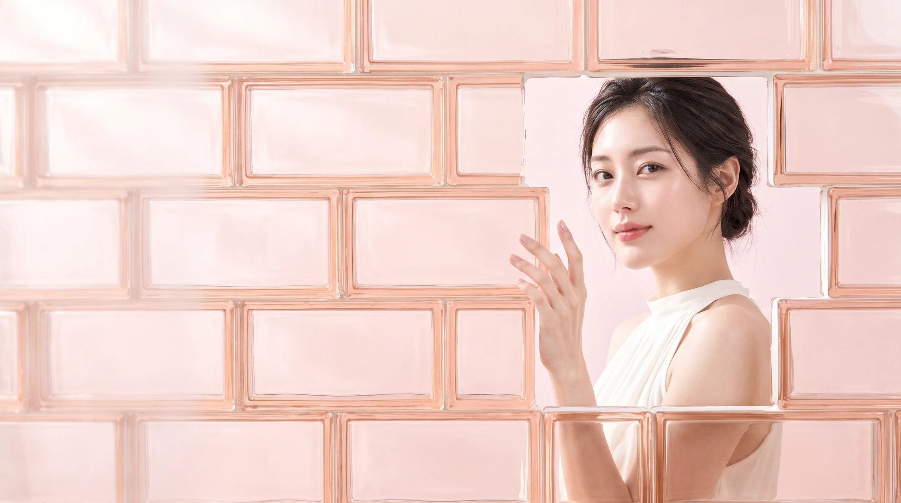
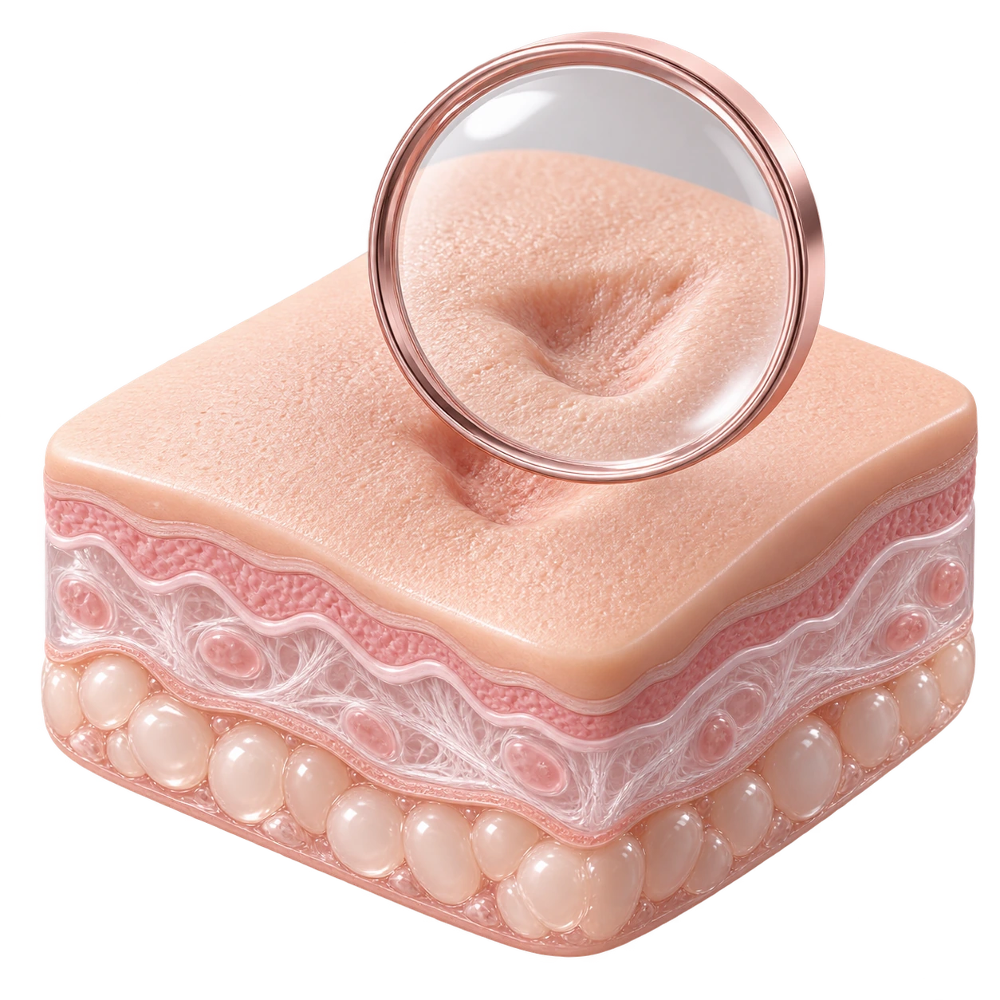
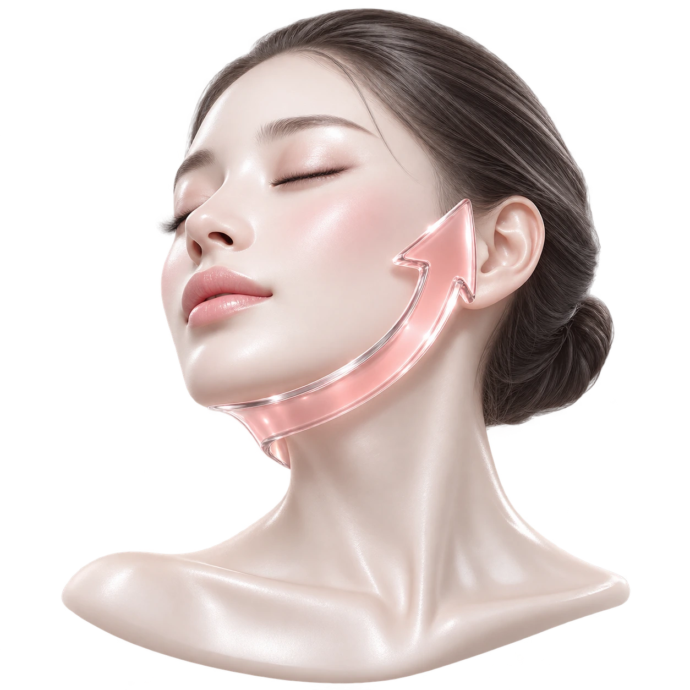
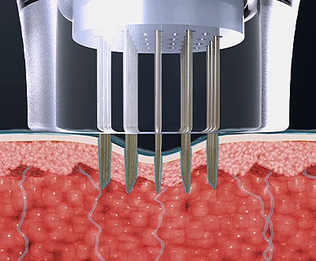
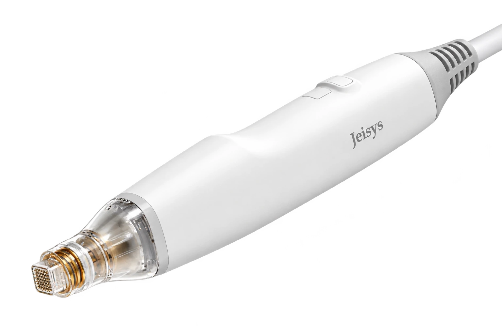
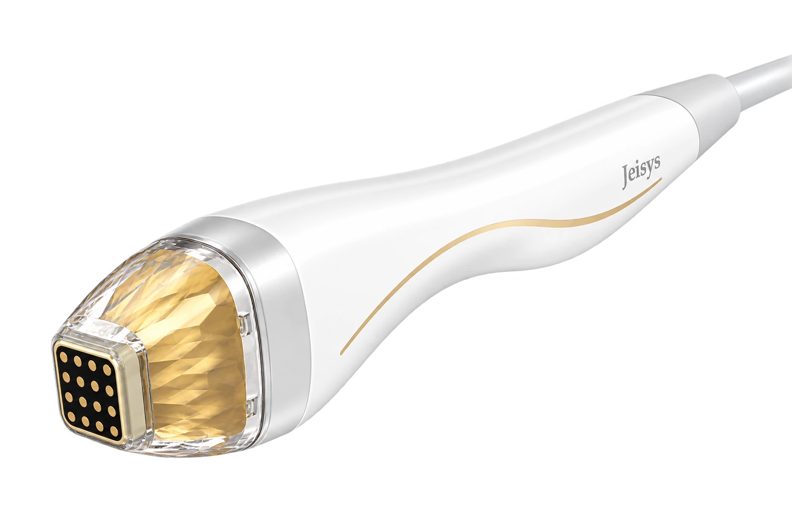

01모공과 피부결
눈에 띄는 모공과 고르지 않은
피부결이 고민이라면.

YOUR SKIN.IN DETAIL.
포텐자는 고주파(RF) 에너지를 사용하는 의료기기입니다. 미세침을 사용하는 방식과 피부 표면에 접촉하는 방식이 있으며, 선택한 팁과 설정에 따라 에너지를 전달합니다.
POTENZA · JEISYS MEDICAL

EVERY SKIN,A DIFFERENTSTORY.
같아 보이는 피부 고민도
상태와 원인은 다를 수 있습니다.
어떤 부분이 신경 쓰이는지,
상담에서 함께 살펴봅니다.

01눈에 띄는 모공과 고르지 않은
피부결이 고민이라면.

02자국과 패인 흉터를 구분하고,
흉터의 모양과 깊이를 살펴봅니다.

03피부 두께와 탄력 상태,
이전 시술 이력을 함께 확인합니다.
피부 상태에 따라 적합한 시술과 접근 방법은 달라질 수 있습니다. 이미지는 이해를 돕기 위한 표현입니다.
PRECISION,BENEATHTHE SURFACE.
마이크로니들 방식은 미세침을 통해
고주파 에너지를 전달합니다.
팁과 설정은 시술 부위와
피부 상태에 맞춰 선택합니다.

MICRONEEDLE RF선택한 팁을 피부에 접촉합니다. 팁과 설정에 따라 미세침이 피부에 진입합니다.
피부에 진입한 미세침을 통해 RF 에너지를 전달합니다.
고주파의 열 작용으로 조직의 응고를 유도합니다. 색상은 이해를 돕기 위한 표현입니다.
TWO WAYS.YOUR WAY.
같은 포텐자 안에서도
에너지를 전달하는 방법에는 차이가 있습니다.

MICRONEEDLE RF
미세침이 피부에 진입한 뒤 RF 에너지를 전달합니다. 사용할 팁과 설정은 피부 상태와 시술 목적에 따라 결정합니다.

SURFACE-CONTACT RF
피부 표면에 팁을 접촉하는 방식입니다. 미세침 방식과 구조가 다르며, 피부 상태와 시술 목적을 고려해 선택합니다.
두 방식을 모두 받는다는 의미는 아닙니다. 원내에서 가능한 팁과 시술 구성을 상담해 주세요.
A PLAN,FOR YOUR SKIN.
피부 상태, 시술 부위와 이전 이력까지.
상담에서 함께 살펴봅니다.
부위별 피부 두께와 민감도, 현재 피부 상태를 살핍니다.
시술 목적에 따라 접근 방식과 사용할 팁을 검토합니다.
이전 시술 이력과 회복에 필요한 시간을 함께 고려합니다.
CARE,WITH YOU.
시술 후 피부 반응도 사람마다 다릅니다.
충분히 안내받고, 피부에 맞게 관리해 주세요.
피부 고민과 이전 시술,
복용 중인 약 등을 알려주세요.
시술 방법과 필요한 마취·준비
과정을 안내받습니다.
상담에서 정한 부위와
방식으로 진행합니다.
피부 반응에 맞는 세안·화장·
생활 관리 안내를 확인합니다.
붉어짐·열감·따끔거림이 나타날 수 있으며, 시술 방식과 개인에 따라 회복 양상이 다를 수 있습니다.
피부를 문지르거나 자극하지 않고, 보습과 자외선 차단 등 안내받은 관리를 따라주세요. 세안·화장·운동·사우나 재개 시점은 시술 후 안내를 기준으로 해주세요.
물집, 심한 통증 또는 점점 악화되는 반응이 있으면 병원에 연락해 진료를 받아주세요.
시술에는 부작용이 생길 수 있습니다. 적합성, 예상되는 반응과 주의사항은 의료진과 충분히 상담해 주세요.
고주파(RF) 에너지를 사용하는 시술입니다. 미세침을 통해 에너지를 전달하거나 피부 표면에 팁을 접촉하는 등 선택한 방식에 따라 접근이 달라집니다.
그렇지는 않습니다. 미세침을 사용하는 방식과 피부 표면에 접촉하는 방식이 구분됩니다. 어떤 방식이 적합하고 원내에서 가능한지는 상담에서 안내받을 수 있습니다.
피부 고민의 종류와 부위, 피부 상태를 함께 살펴 결정합니다. 팁 이름이나 숫자만으로 선택하기보다, 실제 가능한 구성과 그 이유를 상담해 주세요.
따끔거림이나 열감이 느껴질 수 있고, 개인의 민감도와 시술 방식에 따라 차이가 있습니다. 필요한 마취와 진행 방법은 시술 전 안내받습니다.
시술 범위와 방식, 마취·준비 과정에 따라 달라집니다. 예약 시 전체 방문 소요시간을 함께 확인해 주세요.
회복 양상이 모두 같지는 않습니다. 시술 후 피부 반응에 따라 세안·화장·운동 등의 재개 시점을 안내받아 주세요.
피부 상태와 시술 목표, 회복 반응을 고려해 계획합니다. 모든 분께 같은 횟수나 간격을 적용하거나 유지기간을 보장하지 않습니다.
최근 시술의 종류와 시점, 현재 피부 상태를 먼저 확인해야 합니다. 레이저·주사·스킨부스터 등 이전 시술 정보를 의료진에게 알려주세요.
서울시 마포구 양화로 66, 메디원메디컬센터 6층·8층에 위치합니다. 접수는 6층이며, 합정역 3번 출구 인근입니다. 자세한 위치와 운영시간은 아래 안내를 확인해 주세요.
내 피부에 필요한 접근,
상담에서 함께 찾아보세요.
나에게 맞는 이벤트를 펼쳐보세요.
Beauty, with care.
피부 상태와 원하는 변화를 세심하게 살피고,
정품·정량과 충분한 설명을 진료의 기본으로 생각합니다.

피부 상태와 일상, 원하는 변화를
함께 살펴 나에게 맞는 진료 계획을 세웁니다.

정품 사용과 정량 원칙을
진료의 기본으로 생각합니다.

개개인의 자연스러운 아름다움을 존중하며,
시술 과정과 관리 방법을 충분히 설명합니다.
Find us.
평일 10:00–20:00
주말·대체공휴일 10:00–16:30
점심시간 없이 진료 · 공휴일 진료는 문의
평일 10:00–20:00
주말·대체공휴일 10:00–16:30
점심시간 없이 진료 · 공휴일 진료는 문의